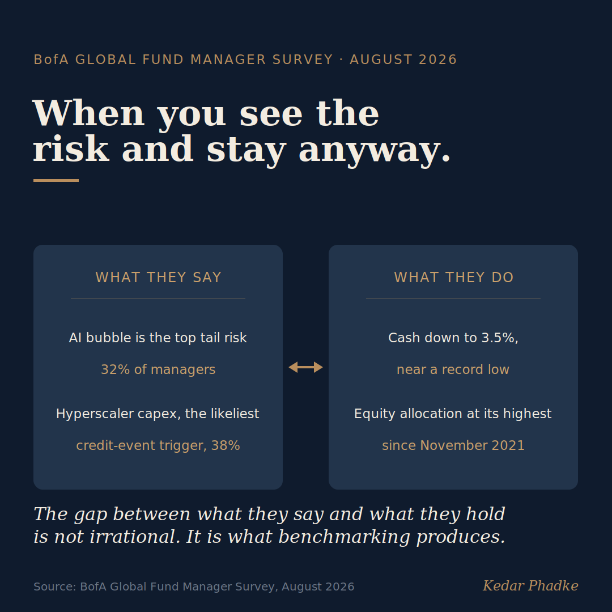

Everyone Sees the AI Risk. Almost No One Is Selling.
Bank of America's August 2026 Global Fund Manager Survey highlights two numbers that sit surprisingly close together.
Among the more than 200 managers surveyed, cash levels have dropped to 3.5 per cent, one of the lowest readings since 1998. Global equity allocations are at their highest since November 2021. Meanwhile, 32 per cent of these managers see an AI bubble as the biggest tail risk in global markets, and 38 per cent believe hyperscaler AI spending is the most likely cause of a future systemic credit event.
Think about that for a moment. The same people who say AI is the biggest threat to their portfolios are also investing the most in it, and they are not backing away from the trade they just called risky. At first glance, this seems irrational. But it is not.

The Principal-Agent Problem Hiding in Plain Sight
Economists have a name for this. It is the principal-agent problem, and it arises when the person managing an asset is not the person who owns it. A fund manager's job is not just to maximise returns. It is also to avoid falling behind the benchmark. If the benchmark is full of AI positions, leaving AI, even when the manager believes it is overvalued, means underperforming, no matter whether that belief turns out to be right.
Benchmarks hold this power because they are how a manager is judged, paid, and kept. Beating the market is the reward, but falling behind the index is what ends careers. So the index, not the manager's own conviction, quietly sets how much risk they are able to take.
John Maynard Keynes described this in 1936. He noted that professional investors do not focus on an asset's true value, but on what most people will think it is worth. This is not a personal failing. It is a logical response to the incentives they face. A manager who calls the AI bubble correctly but six months too early still loses assets, as clients move to peers who stayed in the trade. Being right too soon can harm a career almost as much as being wrong.
The most famous illustration comes from one of the best investors who ever lived. In early 2000, Stanley Druckenmiller, then the lead manager of George Soros's Quantum Fund, had correctly judged the dot-com boom to be a bubble and sold out of technology. He then watched other managers at the firm keep winning without him, could not stand being left behind, and bought about $6 billion of tech stocks near the top. He later admitted he knew it was a mistake even as he made it. Within six weeks he had lost roughly $3 billion and left Soros. He was right about the bubble, and being right early cost him anyway. If relative-performance pressure can do that to Druckenmiller, consider what a formal benchmark does to an ordinary manager.
Being right too soon can harm a career almost as much as being wrong.
What the Data Really Means for Decision-Makers
This is a structural issue. Markets can hold both recognised risks and concentrated exposure for longer than most investors can wait, or stay in their jobs. Managers do see the risk. But seeing a risk and acting on it are two different things, and the way the industry uses benchmarks keeps them apart.
BofA's own strategists point out that cash levels this low usually signal it is time to sell. The survey shows the bank's clients ignoring the very model the bank's own team runs. Yet both sides are acting logically, given the incentives each faces. This is exactly what the principal-agent problem predicts.
If you are allocating capital to an AI-related business, there is a clear takeaway. Waiting for public markets to reflect a possible AI slowdown is not a sound plan. When principal-agent friction is this visible, markets are not reliable for price discovery in the short term. If a correction comes, it will likely be faster and larger than current prices suggest, because so much risk has been recognised but not acted upon.
For students and early-career professionals, this lesson lasts. Knowing a trade is crowded and being able to act on that knowledge are not the same thing. Understanding why the two come apart is one of the more durable ideas in modern finance, and it reaches well beyond investing.
You can see the same trap inside companies. A team will keep funding a failing project long after most people privately know it is failing, because whoever says so out loud owns the failure, while everyone who stays silent shares it. Breaking from the group is the real risk, exactly as it is for the manager who distrusts a trade but holds it anyway. The asset changes. The incentive does not.
So the BofA data raises a genuine question for anyone who manages money or runs a capital allocation process. If you privately believe AI valuations are stretched, what is the specific incentive structure inside your organisation that would let you act on that view? If none exists, what does that tell you about who is really making your decisions?
#AI #InvestmentFinance #Economics #Markets #FutureOfWorkThe anchor is an institutional survey and a well-documented market episode, not a vendor or marketing source.
Sources
- BofA August 2026 Global Fund Manager Survey (led by Michael Hartnett; 203 investors, $581 billion): cash at 3.5 per cent, the sixth-lowest since 1998 and a trigger of the contrarian sell signal at or below 4 per cent; net 56 per cent equity overweight, the highest since November 2021; an AI bubble the top tail risk at 32 per cent; hyperscaler capex the most likely systemic-credit-event trigger at 38 per cent. Coverage at Benzinga, Investing.com, and Yahoo Finance.
- Stanley Druckenmiller and the 2000 dot-com bubble: after correctly avoiding tech and exiting in January 2000, he capitulated near the March peak, bought about $6 billion of tech stocks, lost roughly $3 billion within six weeks, and left Soros's Quantum Fund, which finished the period down about 22 per cent. In his own account he knew it was a mistake as he made it. Novel Investor and Banyan Tree Investment Group.
- John Maynard Keynes, The General Theory of Employment, Interest and Money (1936), Chapter 12, on the professional investor anticipating consensus rather than intrinsic value. Paraphrased, not quoted.
A version of this essay was first shared on LinkedIn.